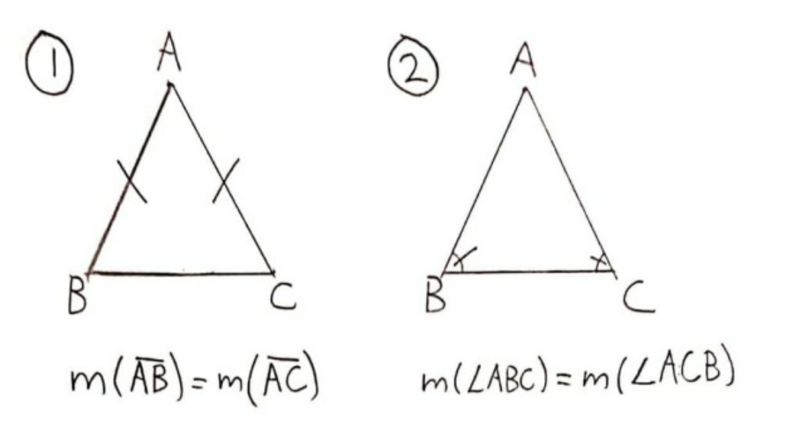
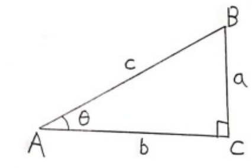
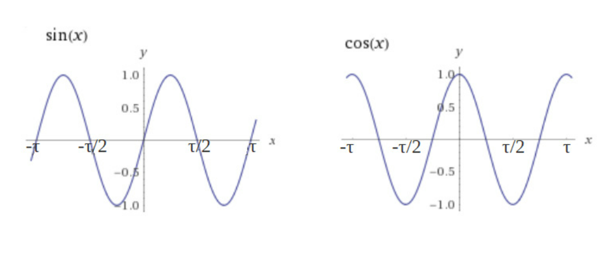
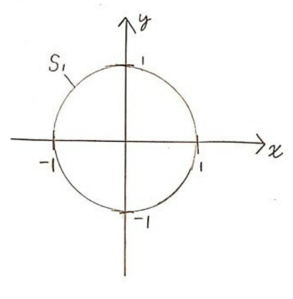
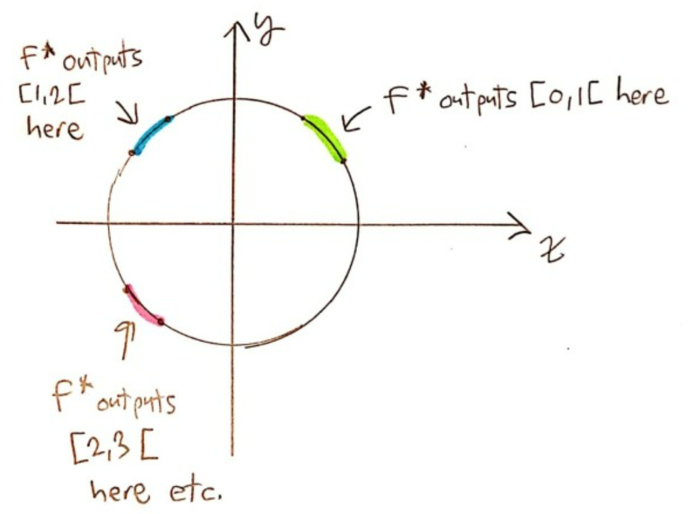
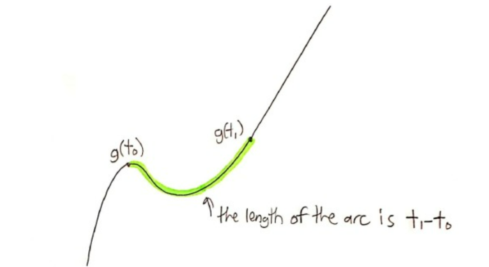

The “best” definition for the sinus and cosinus functions
I use the following personal conventions:
● - Definitions - Propositions I assume are true
○ - Theorems – Propositions I deduce from the definitions
I also prefer \(\tau\) which equals \(2\pi\) as the circle ratio
_____
In mathematics, there is a common phenomenon: there can be multiple ways of defining the same mathematical object.
For example, here are 2 definitions for an isosceles triangle:
● 1) A triangle is isosceles if it has 2 sides of the same length.
● 2) A triangle is isosceles if it has 2 angles that are equal in measure
These 2 definitions are “equivalent” in the sense that a triangle would be isosceles according to the first definition if and only if it is isosceles according to the second definition. (If you are into analytical philosophy, specifically Frege, you might say these definitions express different “senses” but have the same “reference”.)
The case of the isosceles triangle is pretty simple, but in mathematics, there can be definitions for objects which are equivalent but where it isn’t trivial is the slightest.
Even though it is totally frequent for one mathematical object to have multiple definitions available, the way modern mathematics work (by axiomatisation), we have to choose one definition as a “starting point” and then deduce its equivalence with other definitions later on.
So, with our example of the isosceles triangle, we could either choose the first proposition as our definition and then, the second proposition would follow as a theorem, or we could just as well do the reverse.
But, is there a “starting definition” that is “better” than the others? From experience, I would say that, in the point of view of a “pure mathematician”, this is totally irrelevant and doesn’t matter. But, I do think that we can say some definitions are “better” than others if we allow ourselves to use didactic criteria to evaluate them.
In this article, I will be interested with the functions sinus and cosinus, for which I encountered many different definitions in my school years. In Section 1, I will present these definitions and say what I like and don’t like about them using a didactic approach. Then, in Section 2, I will introduce a definition of these functions that I personally think is the best one and I will show that it is “equivalent” with some of the definitions of Section 1.
__________
Section 1 - The usual definitions for sin and cos
At secondary school, I learned the following definition:
Definition 1 (by the triangle):
\(\bullet\) Let \(\triangle\ ABC\) be a right triangle where \(\angle ABC\) is the right angle
Then we define \(sin(\theta)=a/c\) and \(cos(\theta)=b/c \).
The pros for this definition are the simplicity of the language and the fact that it is directly applicable to problems of geometry.
Among the cons, we have that this definition only makes senses for \(\theta \in ]0,\tau/4[\) (let’s immediately work in radians). Also, I don’t think that this way of presenting sin and cos makes it obvious how to visualize the graphs of these functions. (It is possible to see the graphs but it requires us to be kind of clever.)
You might also say that this definition doesn’t immediately allows us to evaluate the functions for a given input. But I don’t think this is such a big problem and I will explain it soon later.
In CEGEP, I learned the definition involving power series:
Definition 2 (by the power series):
\(\bullet \: sin(t) = \sum_{n=0}^{\infty} \frac{(-1)^n}{(2n+1)!}t^{2n+1} \)\(= t-\frac{t^3}{3!}+\frac{t^5}{5!}-...\)
\( \bullet \:cos(t) = \sum_{n=0}^{\infty} \frac{(-1)^n}{(2n)!}t^{2n} \)\(= 1-\frac{t^2}{2!}+\frac{t^4}{4!}-...\)
This definition has the main advantage of allowing us to directly calculate the values of the functions. But the inconvenience that immediately comes with these types of definitions is that they make us say: “Where is this coming from? What is its utility?”.
The reality is that I think the human mind prefers to start of with definitions that make us directly see why the object in question is interesting and relevant. And then, for a function, we should find a way to “evaluate” it later on.
Let’s also note that this definition doesn’t make the shape of the graphs any more obvious.
In university, I got introduced to the following definition:
Definition 3 (by the differential equation):
\( \bullet \: sin (t) \) and \(cos(t) \) are solutions of the differential equation \( f^{\prime\prime}(t) = -f(t) \)
We first note that, because this equation has infinitely many solutions, we need further specifications to precisely define what \(sin\) and \(cos\) are.
This definition for me just mainly shows us a new interest of the sin and cos functions: there are extremely useful tools for solving differential equations. (This is one of the main motivations behind Fourier Analysis.)
This makes us do an important realization: maybe for didactic reasons, the definition we want to use for different mathematical objects depends on the context: For doing regular problems of geometry, Definition 1 for sin and cos is this best one to use. But for the theory of differential equations, then Definition 3 is more relevant.
I do think this argument is very important. But I also have a weak spot for definitions that are kind of more intuitive, more visual and just more “neutral” and “universal” I would say. I think all these criteria apply to the definition I will introduce in Section 2, which I will call “Definition 4 (by the circle)”. In fact, this definition is quite common, but I have never seen it being formalized the way I am about to do.
____________
Section 2 - The “best” definition for sin and cos
Let’s start with a simple question: “How do I describe a circle?”.
Algebraically, the simplest circle is the one of radius 1 centered at the origin. We define it this way:
\( \bullet \: S^1 = \{ (x,y) \in \mathbb{R}^2 | \: ||(x,y)||=1\} \)
We see this way of defining a circle works the following way: We take as points \( (x,y) \) on the circle all the solutions to the equation \( x^2+y^2=1 \).
But what I would like to do instead is to describe the circle with a function, not an equation.
I want a function \(f \) that outputs a point on the unit circle given a real number input.
\(\bullet\:f:\mathbb{R}\to\mathbb{R}^2\) where \(Im(f)=S^1\)
We immediately see that \(f\) is a vector function (has vectors as outputs). Because of that, it can be separated into 2 scalar functions (have real numbers as outputs).
\( f(t) = (x(t),y(t)) \) where \( x: \mathbb{R} \rightarrow \mathbb{R} \) and \( y: \mathbb{R} \rightarrow \mathbb{R} \)
In case you didn’t guessed it, \(x(t)\) will become \(cos(t)\) and \(y(t)\) will become \(sin(t)\). I will continue to write them as \(x(t)\) and \(y(t)\) mainly because this notation makes their role clearer and because they aren’t fully defined yet.
Now, what I want to do is to fully define the functions \(x(t)\) and \(y(t)\). To do that, I will enumerate a list of properties that I want these 2 functions to have.
Because I said I wanted \(f\) to output a point on the unit circle, that implies:
\( f(t) \in S^1 \iff ||f(t)||=1 \)\( \iff ||(x(t),y(t))||=1\)
\(\iff \sqrt{x^2(t)+y^2(t)}=1 \)\(\iff x^2(t)+y^2(t)=1 \)
With this, I will state the first property to these functions, which is the first part of their Definition 4:
\( \bullet \: (1) \: x^2(t)+y^2(t)=1 \)
This property isn’t enough. To illustrate this, let’s remark that the following function \(f^{*} \) does obey the property \( (1) \) but isn’t the “nicest” function we could think of:
Basically, we see that \(f^{*} \) isn’t “continuous”, because it occasionally “jumps”. But, let’s say I want \(f\) to be a function that goes continuously around the circle.
In fact, I want \(f \) to be something more specific: “parameterized by arc length”.
This means the following:
● Let \( g(t) \) be a curve in space (2d in this case). Then \( g(t) \) is parameterized by arc length if the length of the arc between \( g(t_0) \) and \(g(t_1) \) (where \(t_1 > t_0 \) ) is precisely \( t_1 – t_0\).
(In the case of the unit circle, how is this idea related to “radians”?).
I won’t go behind all the theory behind it. It is easy to google anyway. For our purposes, I need to know the theorem that says:
\( \circ \: f \) is “parametrized by arc length” \( \iff ||f’(t)||=1 \)
From that I deduce:
\( ||f’(t)||=1 \)\(\iff ||(x’(t),y’(t))||=1 \)
\(\iff (x’(t))^2+(y’(t))^2=1 \)
From this, we get the second part of Definition 4:
\( \bullet \: (2) \: (x’(t))^2+(y’(t))^2=1 \)
\( f \) being “parameterized by arc length” implies that \( f \) is countinous, as we wanted.
The properties (1) and (2) largely define \( x(t)\) and \(y(t)\). In fact, with just these 2 properties, we can show that \( x(t)\) and \(y(t)\) must obey Definition 3 (by the differential equation). To prove this is a very fun mathematical exercise. Anyway, here’s my demonstration:
We know:
\( \bullet \: (1) \: x^2+y^2=1 \) \( \bullet \: (2) \: x’^2+y’^2=1 \)
We want to show that \( y ^{\prime\prime} =-y \) (The proof for \( x ^{\prime\prime} =-x \) is analogous)
\( (1) \Rightarrow \frac{d}{dt}(x^2+y^2)= \frac{d}{dt}(1) \)
\(\Rightarrow 2xx’+2yy’=0 \)
\(\Rightarrow xx’=-yy’\)
So, we have: \( \circ \: (A)\: xx’=-yy’\\ \)
\( (2) \Rightarrow x^2( x’^2+y’^2)=x^2(1)\)
\( \Rightarrow (xx’)^2+(xy’)^2=x^2 \)
\(\Rightarrow^{(A)} (-yy’)^2+(xy’)^2=x^2 \)
\(\Rightarrow y’^2(y^2+x^2)=x^2 \)
\(\Rightarrow^{(1)} y’^2(1)=x^2 \Rightarrow y’^2=x^2 \)
Consequently, \( \circ \: (B)\: y’^2=x^2\\ \)
\( (B)\Rightarrow \frac{d}{dt}(y’^2)= \frac{d}{dt}(x^2) \)
\(\Rightarrow 2y’y ^{\prime\prime} =2xx’\)
\( \Rightarrow^{(A)} y’y ^{\prime\prime} =-yy’ \)
\( \Rightarrow_{*} y ^{\prime\prime} =-y \)
(I will call this final equation \( (E_y) \) and use it later)
\(QED \)
(The last implication with an asterisk below really needs a bit of justification. Because \( y’ \) can equal 0 for some inputs, we can’t just divide by it. But, there is a way to clean up the mess and make the deduction valid.)
As I said before, Definition 3 (by the differential equation) is incomplete in its formulation. So, it’s not because I was able to deduce it from \((1)\) and \((2)\) that these 2 properties are enough to define \( x(t) \) and \( y(t) \).
What I will do now is that I will try do deduce Definition 2 (by the power series). Trying to do so, it will show me what I have to add to \((1)\) and \((2)\) to make the Definition 4 (by the circle) complete.
What I know:
\( (1) \: x^2+y^2=1 \) \( (2) \: x’^2+y’^2=1 \)
\( (A)\: xx’=-yy’\\ \) \( (B)\: y’^2=x^2\\ \)
\( (E_x) \: x ^{\prime\prime} =-x \) \( (E_y) \: y ^{\prime\prime} =-y \)
To deduce Definition 2, I would like to find the Maclaurin Series for \( x(t) \) and \( y(t) \):
\( x(t) = \sum_{n=0}^{\infty} \frac{x^{(n)}(0)}{n!}t^n \)
\( y(t) = \sum_{n=0}^{\infty} \frac{y^{(n)}(0)}{n!}t^n \)
So, I need to find \( x(0)\), \(x’(0)\), \(x ^{\prime\prime} (0)\), ... and \(y(0)\), \(y’(0)\), \(y ^{\prime\prime} (0)\),...
\((1)\) and \((2)\) aren’t enough to find the Maclaurin Series. So, I will add the following defining property for \(sin\) and \(cos\) that is honestly only justifiable as a convention:
\( \bullet \: (3) \: f(0) = (x(0), y(0)) = (1,0) \)
So we’ve essentially just chosen the starting point for our curve \( f\). It could just as easily have been \( (0,1)\) or \( (\frac{1}{\sqrt{2}}, \frac{1}{\sqrt{2}} ) \), which also are on the unit circle. This choice for \( f(0) \) is, I think, mainly justifiable as a way to make Definition 4 (by the circle) equivalent to Definition 1 (by the triangle).
Now, let’s use this equation in the quest of finding the Maclaurin Series of \(x(t) \) and \( y(t)\) :
From \((3) \: x(0)=1 \) and \( (E_x) \: x ^{\prime\prime} =-x \), I deduce:
\( x^{(4k)}(0)=1 \) and \( x^{(4k+2)}(0)=-1 \) where \(k \in \mathbb{N}\)
From \( (3) \: y(0)=0 \) and \( (E_y) \: y ^{\prime\prime} =-y \), I deduce:
\( y^{(2k)}(0)=0 \) where \(k \in \mathbb{N}\)
We are halfway done. But, for the next step, we need to be kind of clever and use an old equation we proved earlier:
\( (B) \: (y’(t))^2= (x(t))^2\)
\( \Rightarrow (y’(0)^2=(x(0))^2\)
\( \Rightarrow^{(3)} (y’(0))^2=(1)^2 \)
\( \Rightarrow y’(0) = \pm 1 \)
Again, there is a choice to be made, and again, it is a matter of convention.
It can be shown that choosing \( y’(0)= 1\) will make the vector function \(f\) go counterclockwise around the unit circle and that choosing \(y’(0)= -1\) will make it go clockwise instead. Yes, we will choose the first option because of the convention of how we measure angles.
\( \bullet \: (4) \: y’(0) = 1 \)
This will be the last property we add to Definition 4. Let’s see what we can do with it:
From \( (4) \: y’(0)=1 \) and \( (E_y) \: y ^{\prime\prime} =-y \), I deduce:
\( y^{(4k+1)}(0)=1 \) and \( y^{(4k+3)}(0)=-1 \) where \(k \in \mathbb{N}\)
From \( (4) \: y’(0)=1 \) and \( (2) \: x’^2+y’^2=1 \), I deduce:
\( (*) \: x’(0) = 0 \)
Finally, from \( (*) \: x’(0)=0 \) and \( (E_x) \: x ^{\prime\prime} =-x \), I deduce:
\( x^{(2k+1)}(0)=0 \) where \(k \in \mathbb{N}\)
Putting all of this together, we finally get the MacLaurin Series:\( x(t) = \sum_{k=0}^{\infty} \frac{(-1)^{k}}{(2k)!}t^{2k} \)
\( y(t) = \sum_{k=0}^{\infty} \frac{(-1)^{k}}{(2k+1)!}t^{2k+1} \)
And so we’ve just proven that Definition 4 (we’ve just completed) is equivalent to Definition 2!
For clarity, let’s put all the parts of Definition 4 together and we will posture \(x(t) = cos(t) \) and \(y(t) = sin(t)\).
Definition 4 (by the circle):
\( \bullet \: sin: \mathbb{R} \rightarrow \mathbb{R} \) and \( cos: \mathbb{R} \rightarrow \mathbb{R} \), where
\( (1)\: cos^2(t)+sin^2(t)=1 \)
\( (2)\: (\frac{d}{dt}cos(t))^2+ (\frac{d}{dt}sin(t))^2 =1 \)
\( (3)\: sin(0) = 0 \) (which implies \( cos(0) =1) \)
\( (4) \: ( \frac{d}{dt}sin(t))|_{t=0} = 1 \)
We can also put it on words like that:
Definition 4 (by the circle):
\( \bullet \: f(t) = (cos(t),sin(t)) \) is a function from \(\mathbb{R}\) to \(\mathbb{R}^2\) where \( Im(f) = S^1\) (unit circle). Also, \( f\) is parameterized by arc length, starts on \( (1,0) \) and goes counterclockwise.
The language can really be seeing as harsh, but once this definition is really understood, it allows us to directly visualize what \(sin(t)\) and \(cos(t)\) mean. It is also not hard to see the shape of their graphs, especially with the help to this gif.
{kind=link}
This is the reason why I think this is the best definition in a didactic point of view.
If we want a more accessible language for people who aren’t specialized in math, this formulation would also be valid:
Definition 4: ● If I start on the unit circle at \( (1,0)\) and I walk t units of distance counterclockwise while staying on the unit circle, my x position will be \(cos(t) \) and my y position will be \( sin(t)\)
I let to you the proof that Definition 4 is equivalent to Definition 1 (for \( t \in ]0,\tau/4[) \). It is definitely the most straightforward proof on the bunch.